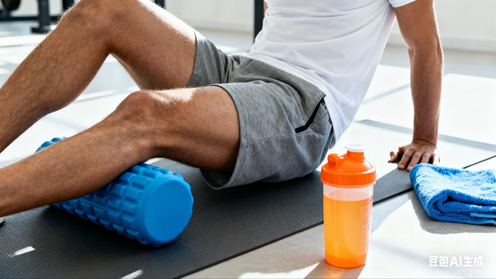
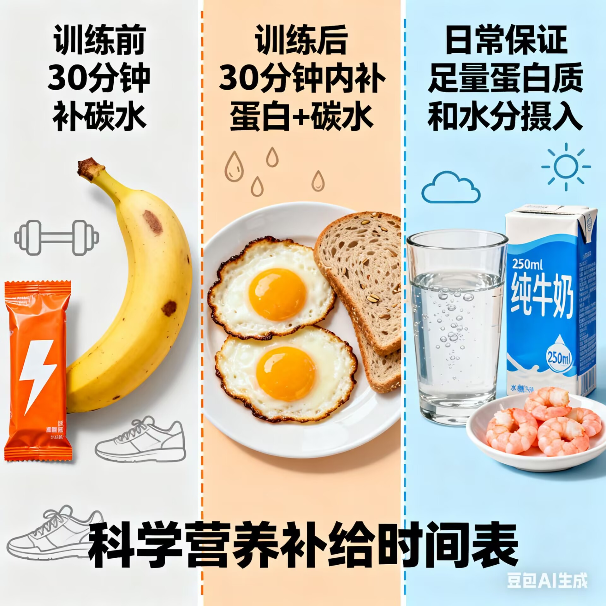
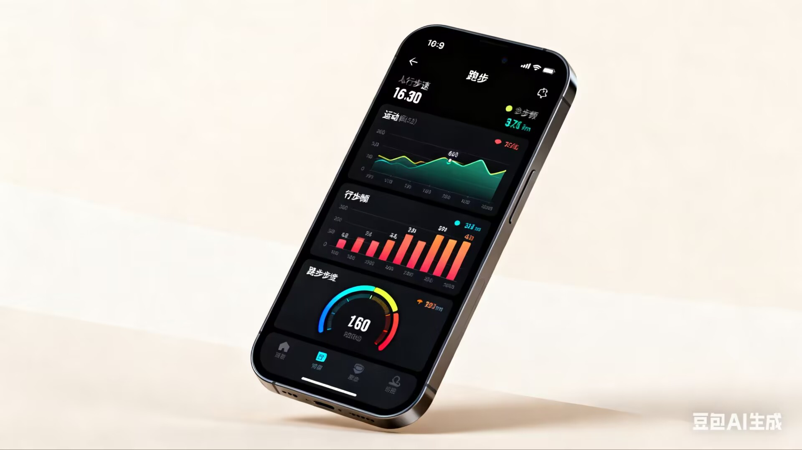

关键保障体系
训练是提升能力的“进攻”，保障是避免损伤、巩固效果的“防守”。高水平跑者之所以能长期保持状态，核心在于完善的保障体系。



保障体系常见误区
❌
只重视训练，忽视恢复：认为“练得越多进步越快”，导致过度训练、免疫力下降、运动损伤
❌
营养补充盲目：训练后只喝运动饮料，忽视蛋白质补充；或过度节食减脂，影响训练状态
❌
不看数据凭感觉：配速忽快忽慢，训练强度失控，无法形成系统化的能力提升
❌
忽视小损伤：认为“小痛正常”，拖延处理导致慢性损伤，影响长期训练计划